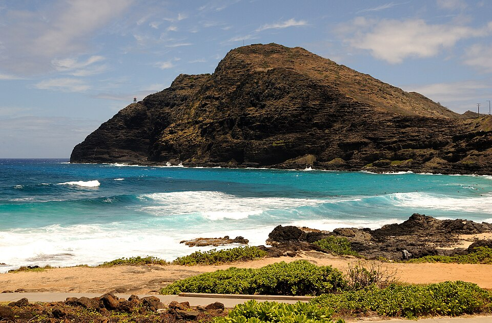

Makapuʻu Point
Place: Makapuʻu Point, East Oʻahu
Type: Coastal headland / scenic landmark / historic landscape
Story it tells: Oʻahu's easternmost point, preserving a name tied to a legendary figure, a vanished stone, and one of Hawaiʻi's most recognizable coastal views.

Makapuʻu Point marks the easternmost point of Oʻahu and is one of the island's most recognizable coastal landmarks. The name Makapuʻu is commonly translated as "bulging eyes." Traditional accounts describe a stone at the point with eye-like protrusions that was associated with a legendary woman named Makapuʻu. The stone was regarded as a kinolau, or physical manifestation, of this figure, though it is no longer present.
The headland forms part of Oʻahu's rugged Kaʻiwi coastline, where steep sea cliffs rise above the Kaʻiwi Channel. Makapuʻu is a remnant of an ancient volcanic ridge and provides sweeping views of the island's southeastern shore, nearby offshore islets, and, on clear days, the islands of Molokaʻi and Lānaʻi.
In 1909, Makapuʻu Point became home to the Makapuʻu Lighthouse, built after years of concern about maritime navigation along Oʻahu's eastern coast. The active lighthouse stands 46 feet tall and contains one of the largest hyper-radiant Fresnel lenses ever installed in the United States. Together, the lighthouse and headland became enduring symbols of East Oʻahu.
The area also contains important cultural and natural sites. Below the cliffs, Makapuʻu Beach became known for powerful waves and bodyboarding, while nearby Kū Heiau preserves connections to the region's Hawaiian past. During World War II, military installations were constructed along portions of the coastline, remnants of which can still be seen today.
Today, Makapuʻu Point is one of Oʻahu's most visited scenic destinations. The paved lighthouse trail attracts hikers, whale watchers, and photographers, while the name Makapuʻu continues to identify the point, beach, lighthouse, surf breaks, and surrounding coastal landscape. Although the original stone associated with the name has disappeared, the place name remains one of the most enduring on Oʻahu's southeastern shore.